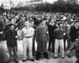
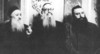
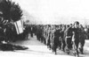
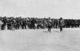
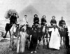
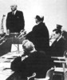
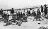

ألبوم الصور المتنوعة

مجموعة متطوعين داخل إحدى الفرق اليهودية في تل أبيب 1946

بعض الحاخامات اليهود في جورجيا

إحدى الوحدات اليهودية تقوم بتحية العلم الصهيوني أثناء إستعراض عسكري في بلجيكا 1945
أشهر الكتاب اليديشيين السوفييت

إستعراض لفيلق صهيوني في مصر 1915
ليو بايك
ليفي أشكول
عناصر من فيلق يهودي أمام حائط المبكى 1918
إسحاق بن زيفي

إيزاك بن زيفي (على اليسار) ورفاقه بالقوات اليهودية في منطقة الأهرامات 1918

سالو بارون

قوات يهودية مرابطة خارج مدينة القدس 1919
align="center" DIR="ltr">
align="center">page 4 of 13